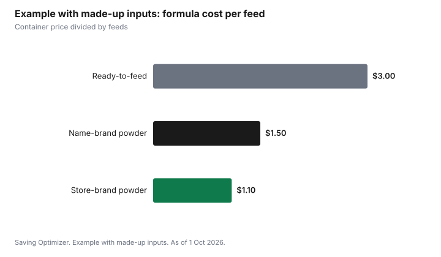

Kids · Canada
Infant Formula Costs in Canada: Store Brands, Formats and What Not to Do

In Canada, you can lower infant formula costs by comparing the cost per prepared feed, considering a store brand and choosing a cheaper format, but never by stretching the formula. Health Canada advises parents not to make homemade formula and not to dilute commercial formula; prepare it exactly as the label says. Health Canada reviews infant formulas before they are sold in Canada, so buy from Canadian retailers and pharmacies, and talk to your health care provider before switching products.
Key takeaways
- Never dilute formula or make it at home. Prepare it exactly as the label directs.
- Compare cost per prepared feed, not cost per can. Formats yield different amounts.
- Powder is often the lowest cost per feed; ready-to-feed is convenient and usually costs more. Check the numbers on the labels.
- Ask your health care provider before switching brands or types.
- Buy from Canadian retailers and pharmacies, not unknown online sellers.
What not to do
- Do not add extra water to make formula last longer. Diluted formula does not give a baby enough nutrition.
- Do not make homemade formula from recipes online.
- Do not substitute cow's milk, plant-based drinks or toddler drinks for infant formula unless your health care provider tells you to.
- Do not buy formula from unknown sellers or imports that may not meet Canadian rules.
- Do not use formula past its best-before date.
If you are struggling to afford formula, talk to your health care provider, public health nurse or local food bank. Some communities have programs that help with infant feeding costs.
Formats compared
| Format | How it works | Cost and convenience |
|---|---|---|
| Powder | Mixed with safe water as the label directs | Often the lowest cost per feed; needs careful measuring |
| Liquid concentrate | Mixed with an equal or label-specified amount of water | Usually in between |
| Ready-to-feed | Poured as is | Most convenient; usually the highest cost per feed |
Store brands
Store-brand infant formulas sold in Canada must meet the same federal requirements as name brands, and Health Canada reviews infant formulas before sale. Compare the type (standard, lactose-free, partially hydrolyzed and so on) rather than the brand. A store brand of the same type can cost less. Ask your health care provider before switching, especially for a specialized formula.
Ways to lower the cost
- Work out cost per prepared feed from the label yield, then compare sale prices.
- Use loyalty points and price matching where you already shop.
- Ask whether manufacturer programs offer coupons; compare the coupon against store-brand prices.
- Buy the size you can use before the can expires and within the label's use-by time after opening.
- Keep receipts in case the type needs to change.
Preparing powdered formula safely
Powdered infant formula is not sterile, so preparation matters. Health Canada's guidance for premature or low birth weight infants under two months, or infants with a weakened immune system, is to boil water for 2 minutes, cool it to 70°C (about 30 minutes), pour the required amount into a sterilized bottle and add the powder as the manufacturer directs. Water at 70°C kills potential harmful bacteria. Ask your health care provider which method fits your baby, and follow provincial health guidance.
- Wash your hands and clean the work surface.
- Use sterilized bottles, nipples and rings.
- Boil water for 2 minutes, then cool it as directed.
- Measure the water first, then the powder with the scoop that came with that container; scoop sizes differ between products.
- Mix well and cool quickly to body temperature.
- Test a few drops on the inside of your wrist before feeding.
Storing formula
| Situation | Guidance |
|---|---|
| Prepared ahead | Cool quickly under cold running water; refrigerate at 4°C or below |
| Refrigerated prepared formula | Use within 24 hours, or as the manufacturer specifies |
| Once a feeding starts | Use the bottle within 2 hours, then throw out leftovers |
| Warmed formula | Do not refrigerate and reuse |
Prepare smaller bottles if you often throw formula away; leftovers are a hidden cost. Follow the label for how long an opened container lasts.
Common mistakes that cost money or safety
- Mixing more powder or water than the label says to stretch a can.
- Using a different product's scoop.
- Keeping a partly finished bottle for the next feed.
- Switching between formula types often in search of a sale without asking your provider.
- Buying very large containers you cannot finish before they expire after opening.
If you cannot afford formula
Do not dilute formula. Talk to your health care provider or public health nurse, who may know of local programs. Food banks in many communities stock formula or can refer you. Check whether you are receiving the Canada Child Benefit and any provincial child benefit, which you apply for after the birth, often through birth registration.
Example with made-up inputs: cost per feed
These numbers are an example with made-up inputs, not current prices or yields. Read the yield on the actual labels.
| Product | Price | Feeds per container | Cost per feed |
|---|---|---|---|
| Name-brand powder | $45 | 30 | $1.50 |
| Store-brand powder | $33 | 30 | $1.10 |
| Ready-to-feed | $12 | 4 | $3.00 |

Sources
- Health Canada, infant formula safety information for parents, as of 1 Oct 2026. Do not make homemade formula or dilute commercial formula; prepare as the label directs; Health Canada reviews infant formulas before sale; buy from Canadian retailers and pharmacies.
- Health Canada, Preparing and handling powdered infant formula, as of 1 Oct 2026. Boil water 2 minutes and cool to 70°C for high-risk infants; refrigerate at 4°C or below and use within 24 hours; use within 2 hours once feeding starts.
- The prices and feeds per container in the example table and chart are made-up inputs.
Frequently asked questions
Is it safe to water down infant formula to save money?
No. Health Canada advises preparing infant formula exactly as the label says. Diluting it does not give your baby enough nutrition.
Are store-brand infant formulas safe in Canada?
Infant formulas sold in Canada must meet federal requirements, and Health Canada reviews them before sale. Compare the type of formula, and ask your health care provider before switching.
Which formula format is cheapest?
Powder is often the lowest cost per feed and ready-to-feed the highest, but compare the price and yield on each label to be sure.
Can I make homemade baby formula?
No. Health Canada advises against homemade infant formula.
Where should I buy infant formula?
From Canadian retailers and pharmacies. Avoid unknown sellers and products that may not meet Canadian rules.
How do I prepare powdered formula for a newborn?
For premature or low birth weight infants under two months, or with a weakened immune system, Health Canada advises boiling water for 2 minutes, cooling it to 70°C, and adding the powder in a sterilized bottle as directed. Ask your health care provider which method fits your baby.
How long can prepared formula be stored?
Refrigerated at 4°C or below, use it within 24 hours or as the manufacturer specifies. Once a feeding starts, use the bottle within 2 hours and throw out leftovers.
Researched and drafted with AI assistance and fact-checked against official Canadian sources. How we create content.
Note: Education only. This is not medical advice; talk to your health care provider about feeding your baby.